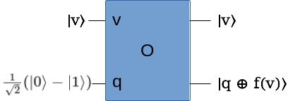

用量子搜索加速『NP完全』问题？
Ping Zhou, 2021-10-26
最近和量子搜索干上了 :-) 聊聊另一个量子搜索的应用——加速NP完全问题的求解。
学计算机朋友的应该都听说过『NP完全问题』。
所谓NP完全问题（NP-complete problems），不是指某一个，而是指一类问题，它们的共同特征是，可以快速验证给定的答案是否正确（verify the solution），但是要找到正确的答案（find the solutions）则很难，目前还没有找到高效（多项式复杂度）的算法。并且这一类问题是可以互相转化的，也就是说如果某一个NP完全问题找到了高效的求解算法，那么所有其他的NP完全问题也都能够高效求解了。
哈密尔顿回路问题（Hamilton cycle problem）就是一个NP完全问题。这个问题是说，给你一个图（有向或无向都可），请你找到一个访问图中所有顶点各一次的回路。这个问题又称为“旅行推销员问题”。
用数学语言来分析，假设这个图有n个顶点 \(v_1, v_2, \dots, v_n\) ，我们要找的是一个包含n个顶点，也就是长度为n的路径。为方便讨论，我们假设允许顶点重复，那么把所有可能的长度为n的路径列出来，总共有 \(n^n\) 种可能，所以整个搜索空间有 \(n^n = 2^{n \log n}\) 个状态。哈密尔顿回路问题，就是要在这个搜索空间里找出符合条件的答案。
显然，给定一个路径，我们很容易就能判断它是否是哈密尔顿回路，但是要从给定的图找到一个哈密尔顿回路，目前还没有发现高效（多项式）的算法。在经典计算机上，寻找哈密尔顿回路的复杂度是：
\begin{matrix} O(2^{n \lceil \log n \rceil}) \end{matrix}那么在量子计算机上，是否可以做的更好呢？答案是肯定的。量子计算机可以对这个问题实现平方根（square root）加速：
\begin{matrix} O(2^{n \lceil \log n \rceil / 2}) \end{matrix}接下来看看量子计算机是怎么做到的。
首先我们得有个函数判断给定的路径是否是哈密尔顿回路：
\begin{matrix} f(v_1 v_2 \dots v_n) = \left\{ \begin{array}{ll} 1 && v_1 v_2 \dots v_n \verb= is a Hamilton cycle= \\ 0 && otherwise \end{array} \right. \end{matrix}然后，把路径 \(v_1 v_2 \dots v_n\) 看作是量子电路的一个状态 \(|v\rangle\) 。比如，给某个顶点编号1到n，那么每个状态就是由n个1到n的数字来组成。显然要用二进制表示这样的状态，需要的肯定不止n比特，而是需要 \(n\log n\) 比特。因此在量子电路里需要 \(n\log n\) 个量子位来表示状态。
把这个判断函数f包装成Grover算法里的Oracle变换：
\begin{matrix} O|v\rangle |q\rangle \rightarrow |v\rangle |q \oplus f(v)\rangle \end{matrix}
如果你还记得Grover算法里的讨论，当f(v)=0时，这个电路右边输出 \(|v\rangle |q\rangle\) ，而当f(v)=1时，右边输出 \(-|v\rangle |q\rangle\) ：
\begin{matrix} O|v\rangle |q\rangle = \left\{ \begin{array}{ll} |v\rangle |q\rangle && f(v)=0 \\ -|v\rangle |q\rangle && f(v)=-1 \end{array} \right. \\ q=\frac{1}{\sqrt 2}(|0\rangle - |1\rangle) \end{matrix}如果我们忽略这里的辅助量子寄存器q，那么这里的O变换作用就是根据f(v)的值，给 \(|v\rangle\) 加上正负相位。所以，这正是我们在Grover算法里所需要的Oracle变换！
接下来的步骤就是和Grover算法里一样，加上H门，Conditional Phase Shift，等等，这里就不重复了，有兴趣的可以参见我之前的文章。
这个算法的性能，我们知道Grover算法的复杂度是 \(O(\sqrt N)\) （假设只有1个答案），这里的N就是搜索空间的大小 \(2^{n \log n}\) 。所以，用Grover算法来求解哈密尔顿回路问题，复杂度是 \(O(2^{n \lceil \log n \rceil / 2})\) ，也就是相对经典计算机有square root加速。
感谢阅读！